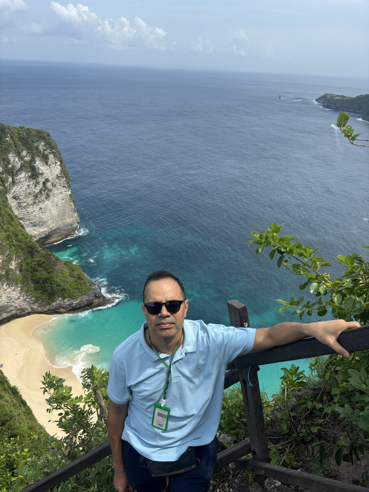
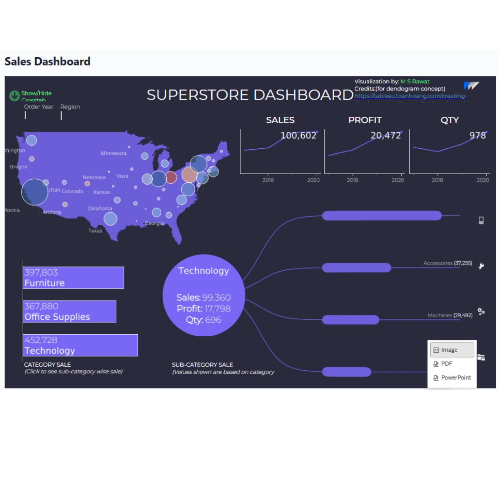
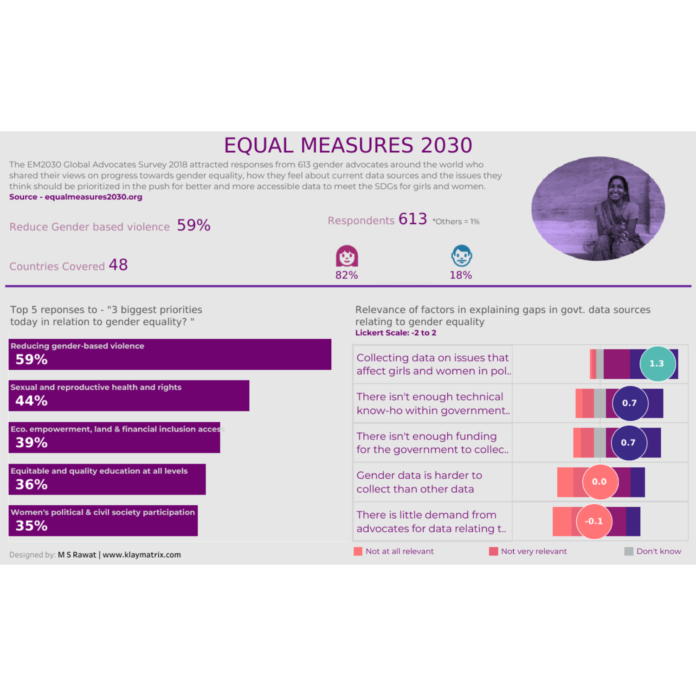
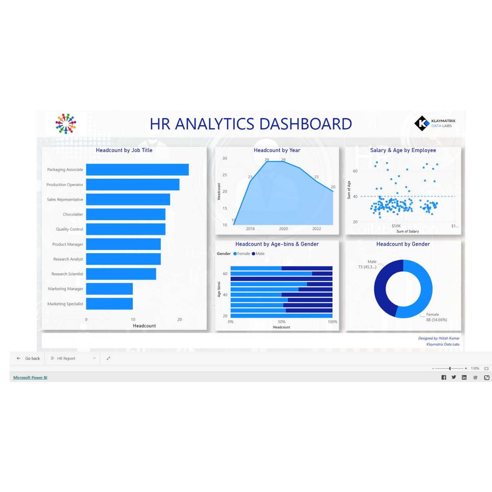
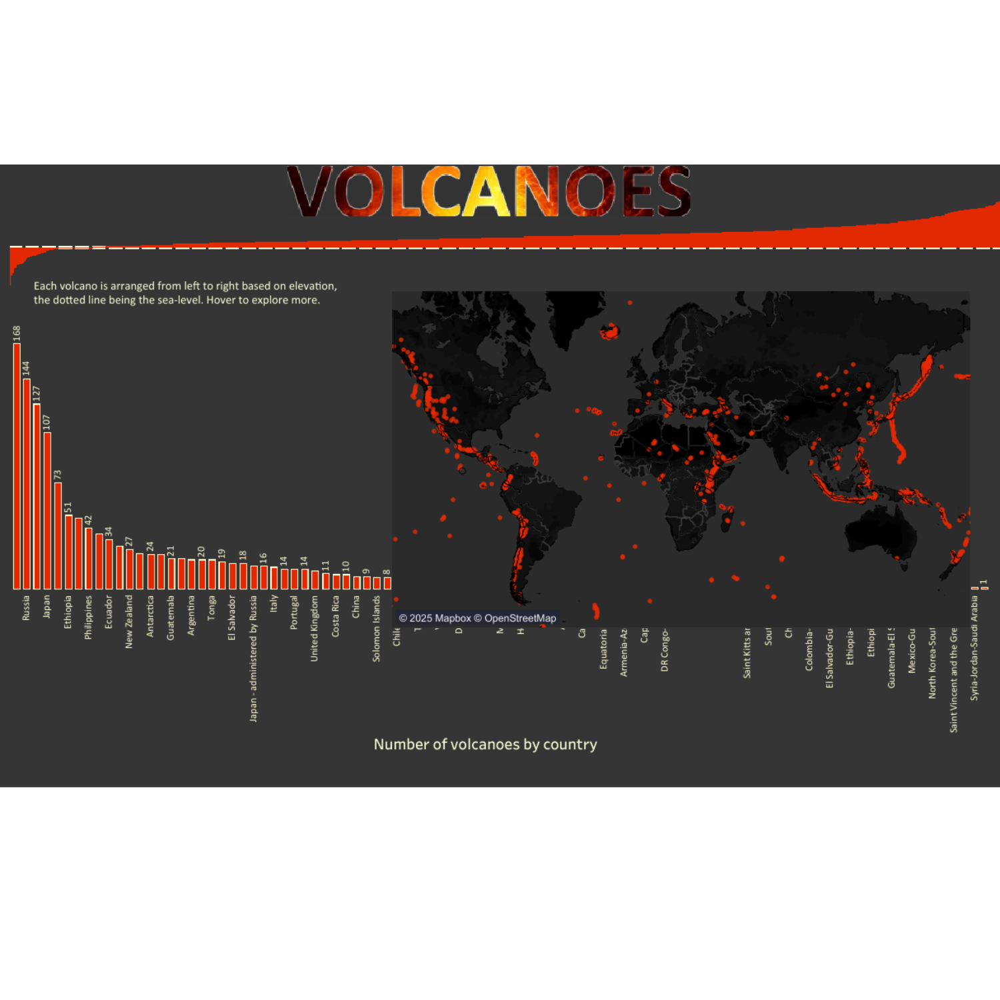
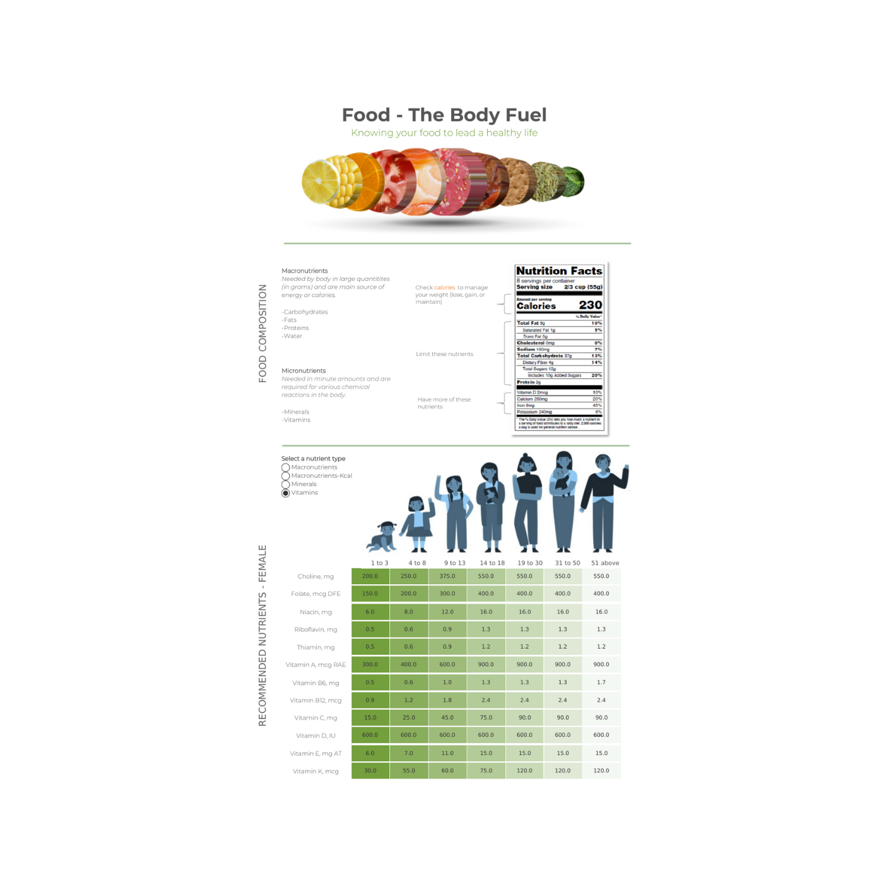
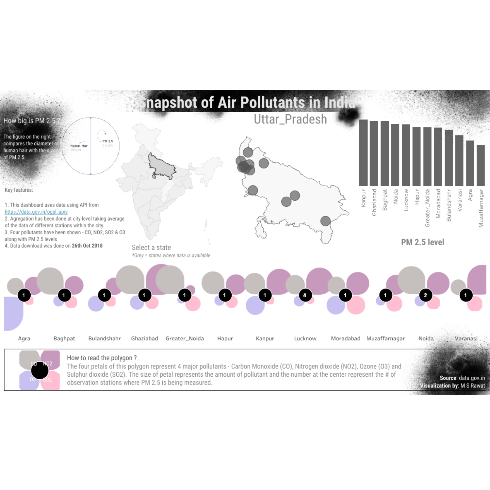
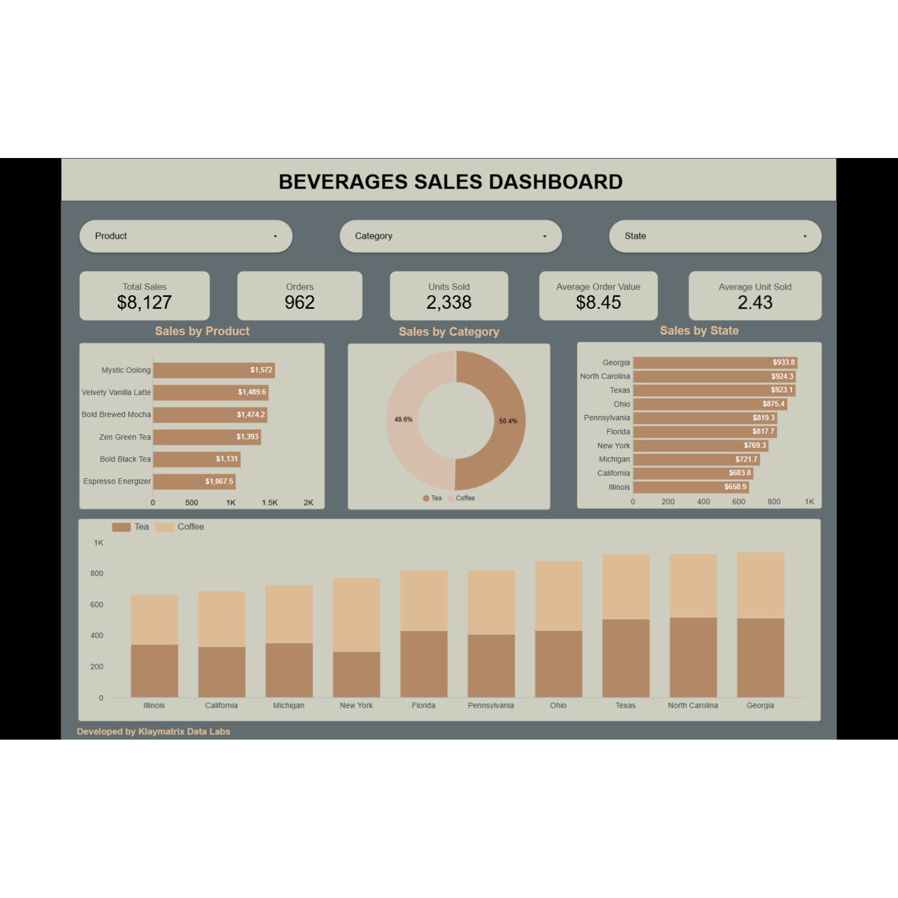
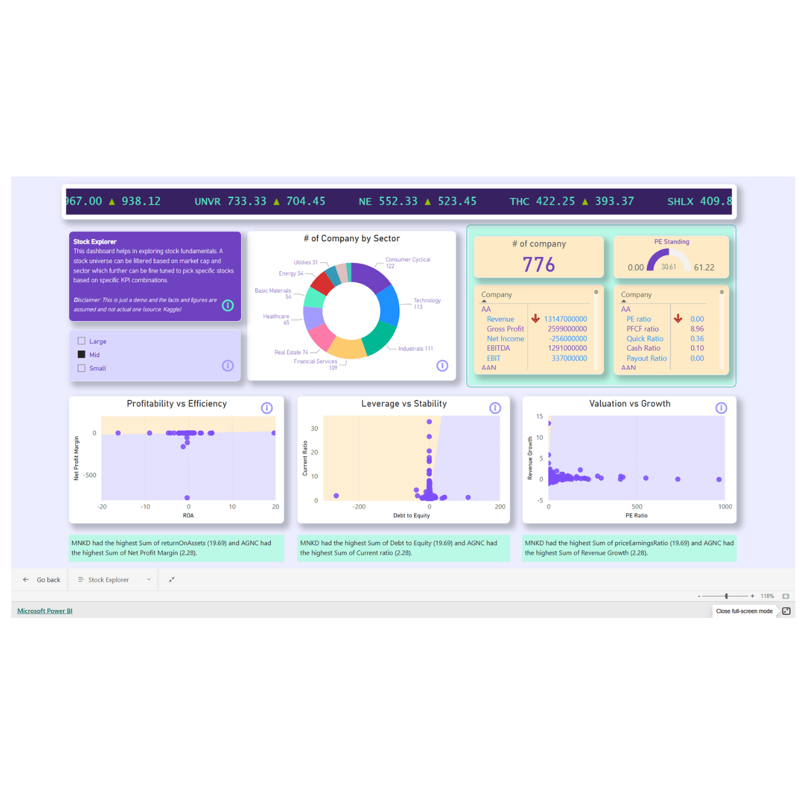

Senior Data & AI Leader · 18+ years
Manvirender
Singh Rawat
Fractional CDO / Director of Analytics
PGDM (Finance), Symbiosis · B.Tech. Production Engineering, G.B. Pant University
I build data and AI capabilities that turn complex information into clear business outcomes. Founder of Klaymatrix Data Labs, fractional data leader, and educator to 10,000+ professionals.

Selected work
Visualization portfolio
A selection of dashboards, public health visualizations and data stories across business and social impact.








Education
Learning and foundations
PGDM, Finance
Symbiosis Institute of Management Studies, Pune · 2005–2007
B.Tech., Production Engineering
G.B. Pant University, Pantnagar · 1999–2003
Certifications
Kaggle Competitions · Python for Data Analysis · Six Sigma · Agile/Scrum
Selected experience
Leadership across sectors
- Head of Data Analytics, PPN SolutionsFractional · 2023–Present
- Founder, Klaymatrix Data Labs2017–Present
- Head of Data Science, Cynoteck2023–2024
- Data Science Faculty, TISS2018–2025
- Independent Consultant, WHO2016–2017
What I work on